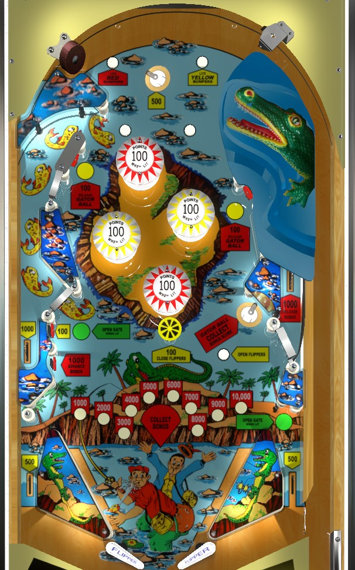

The second flipper button on the right extends a hook from out of the mouth of the gator in the upper right of the game. Use this or the lower left standup target to advance the bonus. Once bonus is high: collect the bonus by locking a ball at the lower right saucer (which does NOT reset the bonus), release the ball to start multiball with the standup targets near the bumpers, relock a ball back into the saucer, repeat. The center mushroom bumper zips the flippers together; the white rollover button in front of the lower right lock saucer unzips them.
The below picture was taken from the VPX recreation by Loserman76 and HauntFreaks.
The two rollover buttons at the top of the table light the red or yellow pop bumpers as indicated. Lit pop bumpers stay on for the rest of the ball. All bumpers score 10 points when not lit or 100 points when lit.
The second flipper button on the right side of the cabinet activates a hook that extends from underneath the plastic that depicts an alligator. Proper timing of this hook while the ball is nearby will drag it into an otherwise secret lane underneath said plastic, which scores 1,000 points and a bonus advance and is spit out on the right side of the table. The secret lane cannot be accessed any other way. The exit feed from the secret lane should generally put the ball on the right flipper, but individual machines may sometimes see the ball be directed toward the right slingshot or center drain- take note on this feed and nudge accordingly. Since collecting the bonus as many times as possible is ideal for a high score on Nip-It, try to catch the ball with the gator hook whenever possible. The gator hook is always available and can be used an infinite number of times; there is no penalty for using it and failing to trap the ball with it. An improperly timed use of the gator hook will either miss the ball entirely or push the ball to the left.
Put a ball in the lower right saucer to lock it. Locking a ball immediately scores the current end-of-ball bonus, and does not reset it. This is the only way to earn more than 1,000 points at a time on Nip-It. When a ball is locked in the saucer, two standup targets in the bumper area will be lit. These targets score 100 points and release the locked ball. A locked ball persists across players and games, so you can capitalize on what has been left behind by other players. There are no multiball-specific scoring features; the best thing to do during multiball is either shoot for the Advance Bonus standup target in the lower left, or try to lock a ball in the saucer again to recollect the current end-of-ball bonus. The best scores on Nip-It go to people who can earn a couple bonus advances, then repeatedly start multiball, relock a ball, and restart multiball.
The left kicker lane can be entered from the upper left of the bumper area, or the lower left of the game just above the lower left standup targets. The kicker scores 1,000 points and launches the ball back to nearly the top of the table; if it's strong enough, the ball will end up vaguely near the gator hook, where it can be snagged with good timing.
There are two standup targets in the lower left. The one closer to the kicker lane gate scores 100 points, and is lit intermittently about 30% of the time based on 10-point switch hits; when lit, this target opens a gate in the right out lane, which redirects the ball back to the shooter lane for a replunge one time. The lower left standup target closer to the flippers always scores 1,000 points and a bonus advance, and is very important to hit when possible.
Nip-It has no in lanes. The flippers back up directly to the slingshots. The slingshots are fairly large relative to most games of the era. The mushroom bumper in the center of the table scores 100 points and zips the flippers together, temporarily blocking off the center drain. The white rollover button in front of the lock saucer on the right reopens the flippers when pressed.
Out lanes score 500 points. The right out lane has a gate that opens if the uppermost of the two lower left standup targets is hit when lit, and closes once used or once the ball drains. The gate puts the ball back into the shooter lane.
Bonus is only advanced by the secret gator lane and the near of the two lower left standup targets. The first 1,000 points in bonus is given for free, and max bonus is 10,000 points. There is no holdover for the base bonus, and there is no bonus multiplier of any kind. Bonus is collected mid-ball by locking a ball at the right saucer. Collecting the bonus mid-ball does not reset the bonus value.
There are no extra balls or playfield specials.